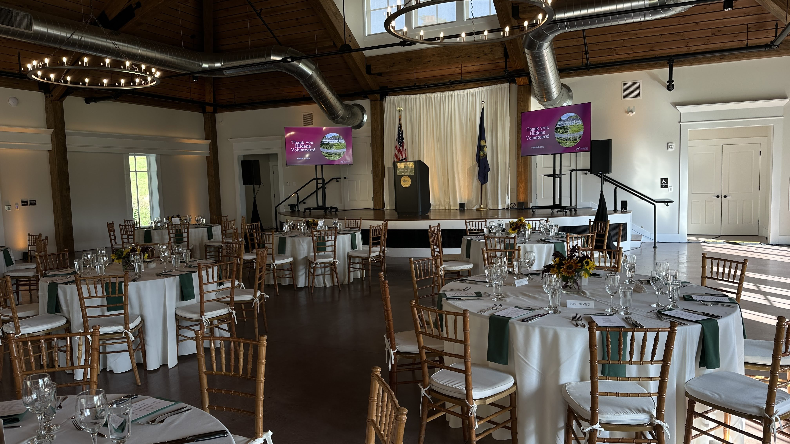

One hundred and twenty-five volunteers. A daytime celebration built to honor the people who keep Hildene running.
The Hildene Volunteer Appreciation Dinner exists to honor 125 people who give their time to one of Vermont’s most significant historic properties. The Lincoln Family Home has been in continuous care since 1905. The volunteers who maintain it and guide visitors through it treat that responsibility personally. The event should feel like it means something.
We built a full PA system — four speakers distributed through Lincoln Hall, supported by a wireless antenna distribution system to maintain a clean signal throughout the space. The goal was consistent, conversational levels during the meal and clear, present audio for the program. A wireless podium mic anchored every speaker to the same quality of sound. Clean handoffs meant no interruptions between remarks.
The Friends Walk induction ceremony — recognizing four volunteers for exceptional dedication to Hildene’s mission — required its own care. Inductees came forward to speak at the podium mic; a video tribute played as part of the ceremony. Our presentation support covered the full scope: PowerPoint slides, a video switcher for holding slides and playback, and live transitions between every program segment. Lighting highlighted the architectural features of Lincoln Hall throughout, creating an atmosphere that felt both formal and warm for a daytime celebration.
Pangaea Restaurant in North Bennington catered. Hildene’s staff coordinated the guest experience. Our job was to make the technology invisible so the afternoon could be entirely about the people in it.


“Equinox made our volunteer appreciation dinner truly special. Their attention to detail and understanding of our historic venue helped create an evening that perfectly honored our dedicated volunteers and made the Friends Walk induction ceremony unforgettable.”